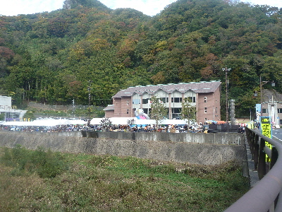
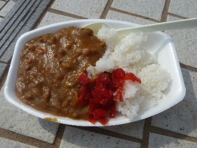
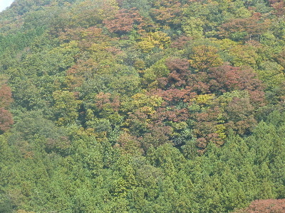
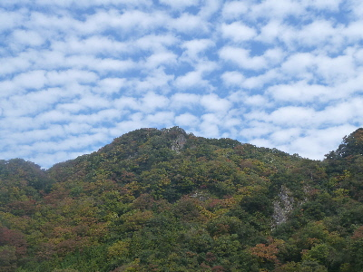

スサノオごっとこいまつりで紅葉を見ました。
2017/11/03
天気が良かったので、お昼を食べに佐田町のイベント「スサノオごっとこいまつり」に行きました。

会場はこんな感じ。役所の前にふわふわドームがあったり、食品を販売しているテントが並んでいました。
お昼過ぎに行ったら、もう完売してるところが何か所かありました。もっと早く行けばよかった。

私が食べたのはこのカレー（300円くらいだったかな）とイノシシラーメン（600円）です。
カレーは甘めなんですが、ルーのスパイス感がありました。
猪ラーメンは、ちょっと濃い感じのしょうゆラーメンかな？猪は高価なので、商品化は難しそうだなと思いました。

会場付近の山々はだいたいこんな感じに紅葉していました。
あっちもこっちも明るい感じに紅葉してて綺麗でした。

今日は紅葉とイベントの両方が楽しめてよかったです。